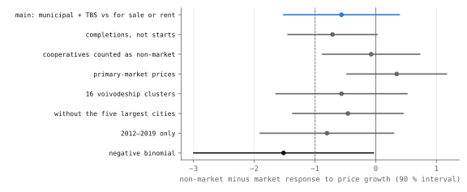

Prague, measured · Part 4 of 5 · pre-registered · new homes in Prague, Vienna and Warsaw, 2012–2024 · 208 European metropolitan regions, Czech permits 2007–2024, Prague 2012–2021
Prague builds two homes for Vienna's three
Counted by their own statistical offices, Warsaw has completed 10.4 new homes a year for every 1 000 residents since 2015, Vienna 6.6 in new buildings alone and Prague 4.5, and Prague has not passed 5 in any year since 2012. To look for reasons, this article places Prague among Europe's metropolitan regions, follows Czech flats from permit to house number and asks where in Prague new flats are built, under tests and decision rules registered before the data were joined. Of the three confirmatory tests only the pipeline test passed, and by it a permitted Prague flat takes about 11 months longer to be completed than one elsewhere in Czechia.
- Prague, per 1 000 residents
- 4.5 a year, 2015–2024 mean · never above 4.9
- Vienna, new buildings
- 6.6 peak 8.5 in 2021
- Warsaw
- 10.4 peak 13.2 in 2018
- Vienna 2024, non-profit builders
- 25 % Warsaw's city and TBS: 0.7 %
- permit to house number, Prague against the rest of Czechia
- +11 months 90 %: 8.7 to 12.6 · supported
- new flats and the metro, per doubling of distance
- indeterminate γ = −0.23 · p = 0.0252 against 0.025
- Prague metro region, rank against a demand model
- 119 of 208 uninformative: relevance check failed
- hypotheses supported, of three tested
- 1 Holm, family-wise 5 %
Overwhelmed? Here's the short version
- Counted by their own statistical offices, Prague has completed 4.5 new homes a year for every 1 000 residents since 2015, Vienna 6.6 in new buildings alone and Warsaw 10.4. Each office uses its own definition, and Vienna's figure leaves out conversions until 2024.
- Of three registered confirmatory tests, one was supported: once permitted, a flat in a new apartment building takes about 11.1 months longer to be completed in Prague than in the rest of Czechia (90 % interval 8.7 to 12.6). Prague's own lag is weakly identified, so the contrast is clearer than Prague's number.
- Each doubling of the distance to a metro station goes with about 20 % fewer new flats per square kilometre in Prague. The registered test is indeterminate (p = 0.0252 against a threshold of 0.025), so the metro hypothesis is not supported.
- Against a European demand model, Prague's metro region ranks 119th of 208 from the bottom, and the ranks are labelled uninformative because the model failed its relevance check. The Polish test of whether municipal and social builders respond less to price growth than developers is also labelled uninformative, because its own relevance check failed.
- The pipeline result starts at the permit, so it does not measure how long it takes to get one. The European comparison establishes no cause, and the builders' test is Polish and says nothing about what limited-profit associations would do in Prague.
Photo: Aktron · CC BY-SA 4.0, colour held · Smíchov City under construction, Praha 5

Prague has 1.4 million residents, Vienna 2.0 million and Warsaw 1.9 million, and housing is argued over in all three. One number to set beside that argument comes from each country's statistical office: how many new homes the city completes in a year for every thousand people who live there123.
New homes per 1 000 residents in Prague, Vienna and Warsaw, 2012–2024

Prague's line is the flattest of the three and the lowest in every year but 2016. It runs between 3.1 homes per thousand residents in 2013 and 4.9 in 2022, and in 2024 the city completed 6 489 homes. Vienna climbed through the 2010s to 8.5 in 2021, when 16 262 homes were completed in new buildings, and has fallen since, to 5.4 in 2024, which is still above Prague. Warsaw built more than both in every year of the series, with a peak of 13.2 in 2018, or 23 430 homes. Over the ten years to 2024 Prague averaged 4.5, Vienna 6.6 and Warsaw 10.4, so for every home Prague completed per resident, Vienna completed one and a half and Warsaw more than two.
| Year | Prague | Vienna, new buildings | Warsaw |
|---|
Per 1 000 residents, homes completed in brackets. Data: cities.json.
Each city is counted by its own office with its own definition. Unlike Prague's and Warsaw's, Vienna's figure leaves out homes made by converting or extending buildings until 2024, so Vienna is if anything understated here. Prague's figures are the Czech Statistical Office's own per-thousand rates; its first release for 2024 gave 6 511 completed homes, revised to 6 489 in the current series. Warsaw's population is Statistics Poland's end-of-year count, averaged over consecutive years and revised upward from 2020 after the 2021 census, and the rates computed from it match the office's own published rate where one exists (11.50 and 11.56 for 2016 and 2017). The three-city figures are produced by tools/praha/cities.py.
Demand, procedure and the response to prices
A city can build little for different reasons, and housing economics has names for them. Demand may be low; procedures may be slow, whether in granting permits or in building once a permit is granted; or supply may not respond when prices rise, which happens where regulation binds and prices rather than quantities take up the demand456. Three cities, each counted by its own office under its own definition, cannot tell these explanations apart. The rest of this article therefore makes Prague one member of larger groups: 208 European metropolitan regions counted by one census, the Czech regions month by month, and the 1 km squares of Prague itself. For the one question the Czech data cannot answer, it borrows a Polish panel of 380 districts.
How this was done
The design was written up and sent to three referees, a housing economist, a statistician and a specialist in official statistics, then revised and committed to the site's public repository before any outcome was joined7. Following the review, this text calls the Czech Statistical Office's "zahájené byty", literally dwellings started, permitted dwellings, because they are counted from building permits, and the pipeline it measures runs from permit to house number. Only three hypotheses, H2, H4 and H5, were kept as confirmatory, and they share a 5 % family-wise error rate through Holm's procedure8. Two others were demoted to estimates, each with a sentence fixed in advance for what would be said: the European comparison (H1), because Prague's census numerator was effectively known from the three-city count above, and the price response (H3), because with one Prague and 27 quarters no valid test exists at those thresholds. Each question also has a relevance check, which tests whether the model sees the expected relationship where it should; if the check fails, the result is labelled uninformative whatever its p-value.
Power was simulated with sealed scripts before any outcome in the confirmatory windows was seen. The simulations expected the pipeline test to be decisive at a six-month difference unless monthly noise was as large as the signal, the metro test to be decisive at a 22 % density difference, and the builders' test to be weak. In Prague the noise turned out to be 3.3 times the signal, which triggered the registered rule that a failed pipeline test must be written "underpowered", but the rule never applied, because the test passed. Everything that changed after registration is listed below.
The five hypotheses and their results
| Hypothesis | Test | Result |
|---|---|---|
| H2 · a permitted Prague home takes longer to get a house number than one in the rest of Czechia | μP − μR > 0 | supported +11.1 months, p < 0.001 |
| H4 · in Poland, municipal and social builders respond less to local price growth than developers | βNM − βM < 0 | uninformative −0.56, p = 0.17; relevance check failed |
| H5 · in Prague, new flats are denser near the metro | γ < 0 | not supported: indeterminate −0.23, p = 0.0252 against 0.025 |
| H1 · Prague builds less than European peers with its demand estimate, rule fixed in advance | conformal rank | uninformative rank 119 of 208, p = 0.57 |
| H3 · Prague's permitting responds less to price growth estimate, rule fixed in advance | 90 % EWC interval | uninformative −11 (−86 to +63) |
p-values are one-sided. H2 uses a stationary block bootstrap9 with 9 999 draws; H4 a wild score bootstrap10 over 242 Polish districts; H5 the larger of a spatial p-value (Conley11, 1.5 km) and a wild score bootstrap over Prague's 22 administrative districts; H3 equal-weighted cosine (EWC) intervals12. Holm thresholds are 0.0167, 0.025 and 0.05. H2 passes the first and H5 misses the second, so testing stops there. Data: housing_extended.json.
Prague among 208 European metropolitan regions
The 2021 census round recorded when each dwelling's building was built. Dwellings in buildings from 2011 or later, per resident and per year, therefore measure the last decade's new supply on nearly the same definition across the 22 countries, although Czechia, Spain and Croatia also count reconstructions13. The unit is the metropolitan region, because housing markets do not stop at city limits, and Prague's region is Prague plus Středočeský kraj. Of Eurostat's 297 metropolitan regions, 208 in 22 countries have the census answer and the covariates.
Per resident, Prague's metropolitan region built 5.28 dwellings a year by the census count, which places it 163rd of 208 from the bottom, in Europe's upper quarter; the median region built 3.55. Counting only completions of new houses, from the Czech Statistical Office, gives 3.88, which is mid-table at 116th of 208 on raw rates, against a median of 3.50. Vienna's region built 6.2 a year and Warsaw's 10.0, so the three-city comparison set Prague beside two metropolitan regions well above the European median of 3.55.
The registered estimate goes further and compares each region with a prediction from what was known in 2011: population growth to 2011, size, output per head, dwellings per head, and whether the region holds a capital. The prediction for each country's regions comes from a model fitted on all other countries, and the gap is scaled by how well such regions are usually predicted1415.

Against that model Prague's region ranks 119th from the bottom, Vienna's 155th and Warsaw's 205th. Czechia's mean score is 0.18, 8th of 22 countries from the bottom, and Prague lies 0.12 above the other Czech metro regions. The city on its own ranks 107th, and with the count rebuilt from the Czech Statistical Office's completions of new houses, Prague ranks 93rd as a metro region and 76th as a city.
The rule written in advance would call this "within the range of European peers", but the model failed its relevance check: regions that grew faster before 2011 did not build more afterwards, and the coefficient is negative. By the same rule, the ranks against the model are labelled uninformative. A separate descriptive comparison, which is not part of the registration, uses the raw Czech Statistical Office rate with no model. By it, Prague built the second most of the 14 Czech regions per resident, 3.7 a year against a median of 2.1 elsewhere.
From permit to house number in Prague and the rest of Czechia
Every month the Czech Statistical Office counts dwellings permitted and dwellings completed in each region. If Prague's flats take longer to finish, completions follow permits with a longer delay. The model estimates that delay as a distribution of lags between the two series, for flats in new apartment buildings, Prague against the other twelve regions. Středočeský kraj is left out of the comparison, because it absorbs Prague's overflow.

The best-fitting mean lag is 16 months in Prague and 5 months elsewhere, a difference of 11.1 months (90 % interval 8.7 to 12.6, p < 0.001), so H2 passes its threshold. The sign holds in every variant that was run: the difference is +7.6 months against Jihomoravský kraj, home of Brno, alone, +10.3 with Středočeský kraj counted as Prague, and +5.0 when family houses are added (p = 0.055).
Prague's lag is weakly identified, as fig. 3 shows: anything from about 14 to 38 months fits almost as well, and Prague's fitted lag distribution is degenerate, with all its weight on one lag of 16 months. The estimates are stable in two narrower ways: no weight falls beyond the six-year window, and in the bootstrap the completion yield and the lag are almost uncorrelated (−0.05). The contrast between Prague and the rest is therefore clearer than Prague's own number. Five months is too short to build a block of flats, so outside Prague the fit probably also tracks common reporting timing. Prague's projects may also be larger, in which case the lag may reflect project size rather than procedure.
Once permitted, Prague's new flats reach completion later than the rest of Czechia's, by months rather than weeks. The finding is modest, because it says nothing about how long the permit itself took, which is the part of the process Czech reform has targeted16.
Prices and permits, 2018–2024
Where supply responds, more dwellings are permitted after prices rise1718. The registered estimate is the cumulative response over twelve quarters: the summed coefficients of permitted dwellings, on a log scale, on quarterly log price changes of flats from the cadastre's index, 2018–2024. A value of 16 means that a price rise of 1 % in each of the twelve preceding quarters goes with about 16 log points more permitted dwellings, and −11 means 11 fewer.
The relevance check is the rest of Czechia's own response, and it cannot be told from zero at 16 (90 % interval −22 to +54), so the comparison is labelled uninformative. Prague's response relative to the rest is −11 (−86 to +63, with a fixed-b interval of −101 to +78), which puts Prague 5th of 13 regions, and the pre-written sentence would have read "cannot be told apart". A placebo with family-house prices gives +8 (−25 to +42), and a shorter four-quarter version over 35 quarters gives +4 (−2 to +10), and with only 27 quarters of one city the question cannot be answered.
Who builds: Vienna, Warsaw and 380 Polish districts

In 2024 a quarter of Vienna's new homes, 3 107 of 12 478, were built by limited-profit housing associations, companies whose profits Austrian law restricts, and another 2.4 % by the public sector itself. In Warsaw the city built 96 homes that year and its public building societies none, 0.7 % of the year's 14 873, so 99.3 % of Warsaw's volume came from builders other than the city. Prague's completions cannot be split the same way from the published series, and for Prague the comparison stops at volume.
No yearly Austrian series by builder was found, so Vienna's associations cannot be followed over time. Poland has such a series: in each of its 380 districts, the dwellings that municipalities, social building societies (TBS) and developers begin each year. The registered question, which concerns Poland only, was whether non-market builders respond less to local price growth than developers.

The point estimate goes the expected way, −0.56 (90 % interval −1.52 to +0.39, p = 0.17), with the 242 districts acting like about 63 independent clusters. The relevance check fails, however, because developers' own starts do not visibly respond to local price growth either (0.09, p = 0.32), which leaves no response for the non-market builders to be smaller than. The result is labelled uninformative, and the pre-written sentence ("non-market builders respond less") is not used.
The design-stage power check had warned of this, with 19 % power at the smallest difference of interest at α = 0.0167 and 26 % at 0.05. One variant, a negative-binomial model, gives −1.52 with p = 0.046. It is the only interval that excludes zero, and it is reported only as a variant.
Subsidised construction can partly replace what the market would have built1920, so the Polish result does not show that a Vienna-style sector would add to Prague's output; more homes are not the same thing as better housing, and Warsaw, which built the most of the three cities, still had fast price growth.
New flats and distance to the metro in Prague
Land near a metro station is worth more, so an unconstrained market would build more densely there, although near-metro squares are also largely built-out estates with little land left to build on. The test counts flats completed between 2012 and census day in March 2021 in each of Prague's 524 one-kilometre squares21, holding equal the distance from the centre and how many people already lived in the square in 201122.

The estimate is γ = −0.227 (90 % interval −0.349 to −0.105), which means that each doubling of the distance to a station goes with about 20 % fewer new flats per square kilometre, yet the registered test is indeterminate. Its decision takes the larger of two p-values, 0.0011 from the spatial (Conley) standard error and 0.0252 from the wild bootstrap over Prague's 22 administrative districts, which act like fewer than 14 independent clusters. Holm's second threshold is 0.025, so H5 is not supported, and the reverse test does not come close. The margin, 0.0002, is within the bootstrap's own simulation error of about 0.0016. The test was not re-run, and under the registered rules H5 stays not supported.
The coefficient stays negative with half-kilometre squares, over 2012–2024, without construction types implausible for new building, with the distance to rail and tram stops added and with clustering by the 57 city districts, and dropping any one district gives −0.27 to −0.18. In 2000–2011 the gradient was about a quarter as steep and uncertain (−0.06). Even a supported result would have left the reason open, because squares near stations differ from others in the land left to build on and in what the plan allows there. Those layers could not be obtained in time and were not run.
How far the results hold
| Specification curve | specifications | same sign | p < 0.05 | robust by the registered rule |
|---|
Registered rule: robust if at least 75 % of specifications share the sign and at least 50 % reach p < 0.05. Data: housing_extended_robust.json.
Against the demand model, which failed its relevance check, Prague stays out of both tails in every variant, from 45th of 116 to 138th of 208. It ranks 123rd of 216 without GDP, 120th of 208 counting only 2016 and later, and 106th of 199 with the stricter 5 % threshold for unknown construction dates. Without Spain and the other Czech metro regions, whose censuses count reconstructions, and with Prague on the rebuilt numerator, it ranks 50th of 183. With a shift-share employment shock in place of population growth it ranks 45th of 116, weighted by population 137th of 208, and with population growth over 2011–2021, which is endogenous to the construction it predicts, 138th of 208.
Two pipeline variants, an exponential lag and one without the COVID months, have bootstraps in which a few draws run off to unbounded lags; their tests carry no information and are counted as failures. The Warsaw replication of the price question, with notified starts of works rather than permits, is not tested, because there is only one Warsaw; it gives Warsaw a cumulative relative response of −5.7, 4th of 376 districts given the same treatment.
What changed after registration
The design left several choices open, and they were made as follows. Census reference dates come from national documentation, and several are marked for verification. A metro region's core is its densest member. The Czech rebuilt numerator uses monthly regional completions, and the within-Czechia comparison is the raw rate, with no model. Lags are the best of 10 starting values, twelve quarterly lags leave 27 quarters, not 35, and the fixed-b critical value is simulated. The Polish bootstrap is the unstudentised score version, its effective number of clusters uses an independence working covariance, and the Polish common support is 242 districts. The rail and tram distances use today's network, half-kilometre squares take their parent square's density, and robustness bootstraps use 999 draws.
Other decisions followed estimation. H5 was decided at p = 0.0252 against 0.025 and not re-run. H2's noise was 3.3 times the signal, which triggered the registered "underpowered" wording rule, but the rule did not apply, because H2 passed. The rest of Czechia's 5-month lag and Prague's flat likelihood are flagged, and two pipeline variants had diverging bootstraps. Three relevance checks failed, and their results are labelled uninformative. Robustness variants for H4 drop district-builder cells with no dwellings at all, which the main frame did not have. Two registered checks, the metro test clustered by the 57 city districts and the Warsaw replication, were omitted from the first runs and added after the fact-check on 29 September 2026; neither is in the family.
Some registered analyses were not run, because their inputs could not be obtained before the outcomes were joined. For the metro question these are the land and planning layers (Urban Atlas, heritage zones, flood plains, the 1999 plan and line D) and the analysis by basic settlement unit. Polish municipal construction times are missing because the statistics API refused connections, and the stock of dwellings under construction because the Prague series has not been published since 2009. One price-index variant and the annual version of the price question were not run either, nor was an OECD source added to stand beside the Doing Business figure, since it was not verified in time.
What this does not show
The European comparison is a description and establishes no cause, and its demand model failed its relevance check. The pipeline result starts at the permit, so it does not measure the time it takes to get one. Because prices respond to supply as well, the price questions measure responsiveness rather than an elasticity. The builders' test is Polish, and it says nothing about what limited-profit associations would do in Prague.
The cadastre keeps only standing buildings and dates the building rather than the flats added to it; the census also dates buildings and, in Czechia, Spain and Croatia, counts their reconstruction; one-kilometre squares and fourteen regions are coarse units23.
References
- Český statistický úřad, Prague office: Bytová výstavba v Praze 1994–2024; Pražská bytová výstavba 2024.
- Statistik Austria: Baufertigstellungen, dwellings completed 2011–2024 by Bundesland and 2024 results by builder; annual average population.
- Statistics Poland: Local Data Bank, Capital City Warszawa, dwellings completed (total, municipal, TBS) and population.
- Glaeser, E. L., Gyourko, J. (2018): The economic implications of housing supply. Journal of Economic Perspectives 32(1), 3–30.
- Glaeser, E. L., Gyourko, J., Saks, R. (2005): Why is Manhattan so expensive? Regulation and the rise in housing prices. Journal of Law and Economics 48(2), 331–369.
- Gyourko, J., Molloy, R. (2015): Regulation and housing supply. Handbook of Regional and Urban Economics 5, 1289–1337.
- Šandová, B. (2026): Prague builds two homes for Vienna's three: research design, registered version 2 with dated changes; referee reports; design-stage power.
- Holm, S. (1979): A simple sequentially rejective multiple test procedure. Scandinavian Journal of Statistics 6(2), 65–70.
- Politis, D. N., Romano, J. P. (1994): The stationary bootstrap. Journal of the American Statistical Association 89(428), 1303–1313.
- Kline, P., Santos, A. (2012): A score based approach to wild bootstrap inference. Journal of Econometric Methods 1(1), 23–41.
- Conley, T. G. (1999): GMM estimation with cross sectional dependence. Journal of Econometrics 92(1), 1–45.
- Lazarus, E., Lewis, D. J., Stock, J. H., Watson, M. W. (2018): HAR inference: recommendations for practice. Journal of Business & Economic Statistics 36(4), 541–559.
- Eurostat: Census 2021, conventional dwellings by period of construction and NUTS 3 region (cens_21dwop_r3); Census 2011 dwellings; population, GDP, employment by industry (nama_10r_3empers) and area by NUTS 3; NUTS 2021 metropolitan typology.
- Vovk, V., Gammerman, A., Shafer, G. (2005): Algorithmic Learning in a Random World. Springer.
- Lei, J., G'Sell, M., Rinaldo, A., Tibshirani, R. J., Wasserman, L. (2018): Distribution-free predictive inference for regression. Journal of the American Statistical Association 113(523), 1094–1111.
- Act No. 283/2021 Coll., the building act; World Bank (2020): Doing Business 2020, Czech Republic, dealing with construction permits (a warehouse case; the series was discontinued in 2021).
- Mayer, C. J., Somerville, C. T. (2000): Residential construction: using the urban growth model to estimate housing supply. Journal of Urban Economics 48(1), 85–109.
- Caldera, A., Johansson, Å. (2013): The price responsiveness of housing supply in OECD countries. Journal of Housing Economics 22(3), 231–249.
- Sinai, T., Waldfogel, J. (2005): Do low-income housing subsidies increase the occupied housing stock? Journal of Public Economics 89(11–12), 2137–2164.
- Eriksen, M. D., Rosenthal, S. S. (2010): Crowd out effects of place-based subsidized rental housing. Journal of Public Economics 94(11–12), 953–966.
- ČÚZK: RÚIAN map service, building points (flats, completion date, construction type), city and administrative districts; Český statistický úřad: open data on permitted and completed dwellings by region (STA09B), price indices of flats (icncr), Census 2021 1 km grid; Statistics Poland: Local Data Bank.
- Eurostat, GISCO: GEOSTAT 2011 1 km population grid.
- Openshaw, S. (1984): The Modifiable Areal Unit Problem. CATMOG 38, Geo Books.
- Šandová, B. (2026): Parts 1, 2 and 3 of this series.